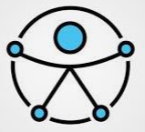

Jornada Dia a Dia
Siga a nossa linha do tempo abaixo. Aviso Importante: O acesso aos links de materiais, videoaulas e transmissões ao vivo será liberado gradativamente em cada data correspondente, permitindo que você estude no seu próprio ritmo e garanta suas horas complementares!
Abertura & Leituras Iniciais
Início da nossa semana com materiais de fundamentação teórica e boas-vindas institucionais.
Trilha de Aprendizagem
Aulas gravadas em formato de playlist sobre práticas pedagógicas inclusivas.
Palestra Magna Ao Vivo
"Desafios e possibilidades no cotidiano educacional inclusivo: construindo pontes com o DUA"
Transmissão ao vivo com a palestrante convidada Profª Mª Luciléia Bechmann Saldanha.
Comemoração do Dia do Psicopedagogo 🎉
"Além da dificuldade: caminhos para o desenvolvimento"
Encontro especial voltado a destacar sua atuação foca na compreensão dos processos de aprendizagem, prevenção e intervenção clínica/institucional nas dificuldades e transtornos.
Consolidação & Estudo de Caso
Aplicação prática do conhecimento construído ao longo da semana.